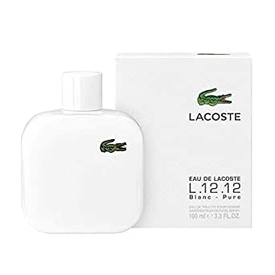
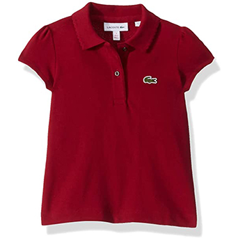
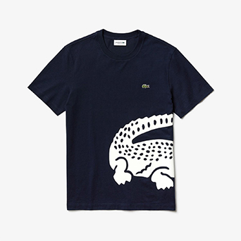
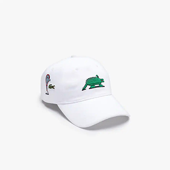
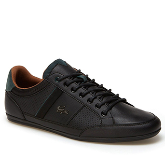
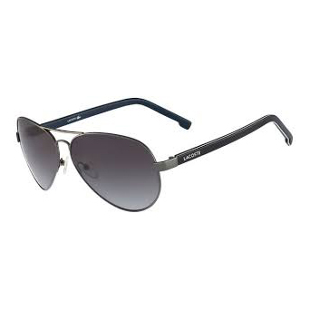
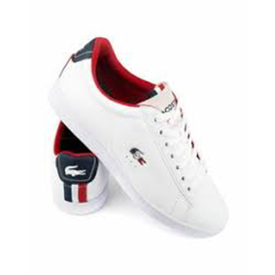
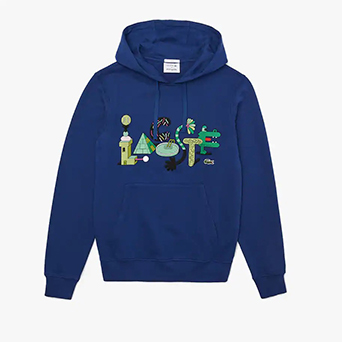

Somos una compañía francesa fabricante de ropa, relojes, perfumes, zapatos, cinturones y maletas, entre muchos otros artículos de lujo. Nuestro producto más famoso, son nuestras camisas Polo, hechas de material piqué.
Nuestro logotipo es el reconocido cocodrilo verde, presente en todos nuestros productos.
Fundada en 1923 por el francés René Lacoste, conocido tenista, ganador con el equipo nacional, al que llamaban popularmente como Los mosqueteros, de la Copa Davis. Esta fama le serviría para comenzar la empresa.
René Lacoste, apodado ' Le Crocodile', tomó su mote desde que se apostó una bolsa hecha de cocodrilo aunque no la ganó. Más tarde se hizo bordar un cocodrilo en la solapa de su chaqueta, pues por aquel entonces aún era infrecuente ver jugar a los tenistas en pantalón y camiseta cortos. Más adelante, cuando inició su línea de ropa dio su apellido a la marca y como insignia utilizó un cocodrilo verde con rojo en la parte interior de sus fauces abiertas.
Estamos ubicados alrededor de todo el planeta, aqui puedes ver un mapa con la direccion de la sucursal mas cercana a ti.








Copyright 2020 ®
Colombia
Somos Lacoste
Siguenos Para estar al dia con todos nuestros productos